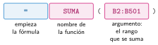
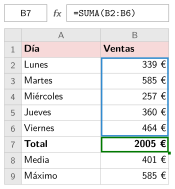

Funciones básicas y fechas
Criterios: 3a, 3b
🤔 Pienso10 min
Qué hago aquí: Piensa un momento y contesta con lo que ya sabes. No pasa nada si no lo sabes: es para empezar.
Tienes que sumar los importes de 500 facturas, de B2 a B501. ¿Escribirías =B2+B3+B4+…? ¿Qué harías?
📖 Leo y aprendo40 min
Qué hago aquí: Lee despacio, mira los dibujos y los ejemplos, y quédate con la idea clave del final.
Una función es una fórmula que ya viene hecha en Excel. Tiene un nombre y, entre paréntesis, sus argumentos: los datos con los que trabaja. En Excel en español, los argumentos se separan con punto y coma.

Las cuatro funciones que más se usan:
| Función | Qué hace | Ejemplo |
|---|---|---|
| SUMA | Suma los números del rango. | |
| PROMEDIO | Calcula la media aritmética. | |
| MAX | Da el valor más alto. | |
| MIN | Da el valor más bajo. |

- Autosuma (Sigma, en Inicio o Fórmulas) escribe la función SUMA y propone el rango. Su flecha tiene también Promedio, Máx. y Mín.
- Para copiar una fórmula a las celdas de al lado, arrastra el controlador de relleno (el cuadrito de la esquina de la celda) o haz doble clic en él. Excel cambia solo las referencias: en la fila 3,
=A2*B2pasa a ser=A3*B3.
Las fechas también se calculan. Para Excel, una fecha es un número (los días desde el 1 de enero de 1900), por eso puede restarlas.
| Función | Qué hace | Ejemplo |
|---|---|---|
| HOY() | Fecha de hoy. Se actualiza al abrir el libro. | |
| AHORA() | Fecha y hora de este momento. | |
| AÑO(fecha) | El año de una fecha. |
=NOMBRE(argumentos). Con el controlador de relleno, la copias a las demás filas y Excel ajusta las referencias.✏️ Hago160 min
Qué hago aquí: Haz las actividades en orden. Empieza siempre por las básicas.
Escribe la función para cada caso. Los importes están en C2:C20.
- El total:
- La media:
- El más alto:
- El más bajo:
Copia la tabla de ventas por empleado y calcula los totales, los máximos, los mínimos y los promedios por filas y por columnas. Usa Autosuma y el controlador de relleno.
En la tabla de existencias de la tienda de ropa, el precio de venta es el de compra más un 10 %. Calcula el precio de venta, el total de compras (precio de compra por cantidad), el total de ventas y el beneficio (ventas menos compras).
Factura básica. Calcula el importe de cada producto, el descuento de cada línea, la base imponible (suma de los importes con descuento), el IVA (21 % de la base) y el total. Pon la cantidad sin decimales y los precios en euros con dos decimales. Añade la fecha con HOY, la fecha y hora con AHORA y una nota en la celda del IVA (Revisar › Notas).
Escribe las fórmulas de la factura si la base imponible está en E10 y el IVA es del 21 %.
- IVA, en E11:
- Total, en E12:
En la columna A hay fechas de nacimiento desde A2. Escribe la fórmula que da la edad en B2 y explica cómo la copias hasta B30.
🚀 Amplío (si quieres saber más)
Qué hago aquí: ¿Has terminado? Lee la curiosidad o elige el reto. Es voluntario.
Busca en Insertar función qué hace DIAS y úsala para calcular cuántos días faltan para el 30 de junio. Escribe la fórmula.
✅ Compruebo10 min
Qué hago aquí: Contesta sin mirar la ficha y marca cómo lo llevas.